UBC Botanical Garden
The Climate Society recently had the pleasure of participating in the 32nd Annual Apple Festival at the UBC Botanical Garden. This event was a celebration of autumn's bounty, focusing on the diverse and delicious world of apples. Our involvement in this festival was an enriching experience that aligned perfectly with our mission of promoting environmental awareness and sustainable living.
At the festival, we engaged with a wide array of attendees, ranging from apple enthusiasts to families enjoying a day out. Our team shared insights about the importance of biodiversity, sustainable agriculture, and the role of local ecosystems in supporting such events. The festival was an excellent platform for us to connect with the community and spread our message about environmental stewardship.
The event featured a stunning variety of apples, apple-based products, and informative sessions about apple cultivation and its environmental impact. Being surrounded by the natural beauty of the UBC Botanical Garden, we felt a deep connection to nature and the importance of preserving such green spaces.
Our participation in the Apple Festival was not only a celebration of this beloved fruit but also an opportunity to remind ourselves of the simple yet profound connections we share with the natural world. We left the event inspired and motivated to continue our efforts in advocating for a sustainable and environmentally conscious lifestyle.
We extend our gratitude to the UBC Botanical Garden for hosting this delightful event and allowing us to be a part of it.
Climate Talk in Brazil

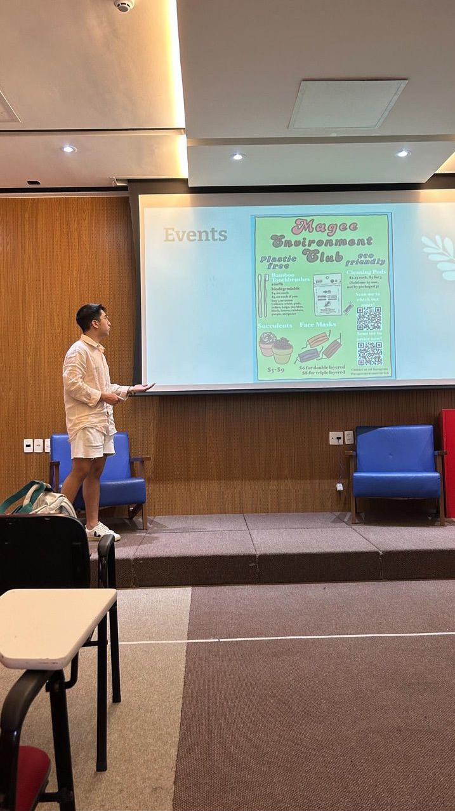
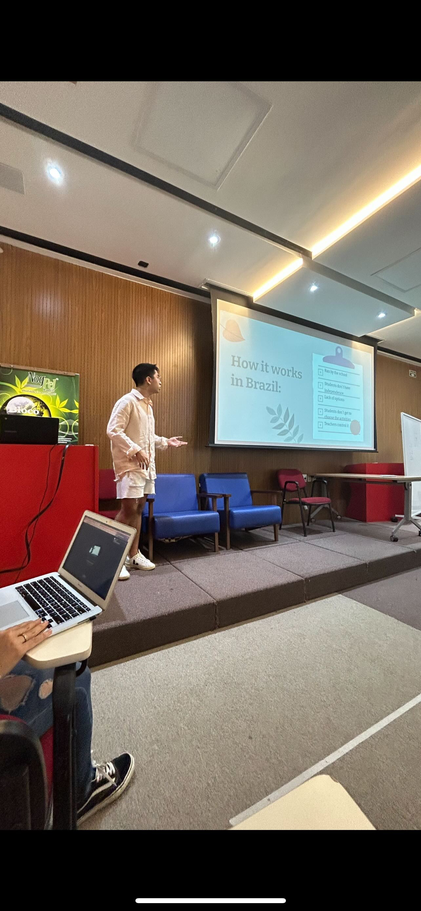
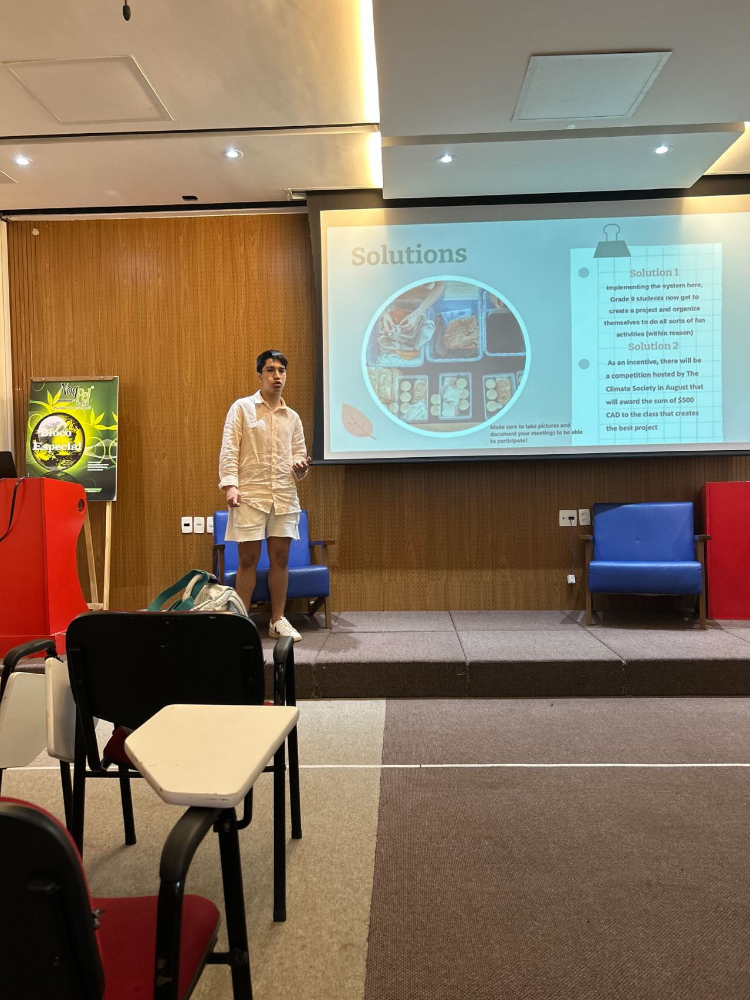
In a heartwarming event held at a local Brazilian school, I had the privilege of imparting valuable lessons on leadership and initiative to a group of enthusiastic children. The focus of the day was on empowering these young minds to create and lead their own school clubs. The event began with an interactive session, where I shared inspiring stories of individuals who took initiative and made a positive impact in their communities. Guiding the children through the process of identifying their passions and interests, I encouraged them to brainstorm ideas for potential school clubs. From environmental awareness to creative arts, the kids embraced a wide range of topics that reflected their diverse interests. Through engaging activities and group discussions, they learned the fundamentals of club organization, including goal-setting, teamwork, and effective communication. As the event unfolded, the children's excitement grew palpable. They not only gained practical insights into forming clubs but also developed a sense of responsibility and ownership over their initiatives. The event concluded with the children presenting their club concepts, showcasing not only their creativity but also their newfound confidence and leadership skills. The impact of this empowering experience went beyond the classroom, fostering a spirit of initiative and community engagement among the young participants.
- Otavio Nunes, Co-Founder
Local Climate Talk
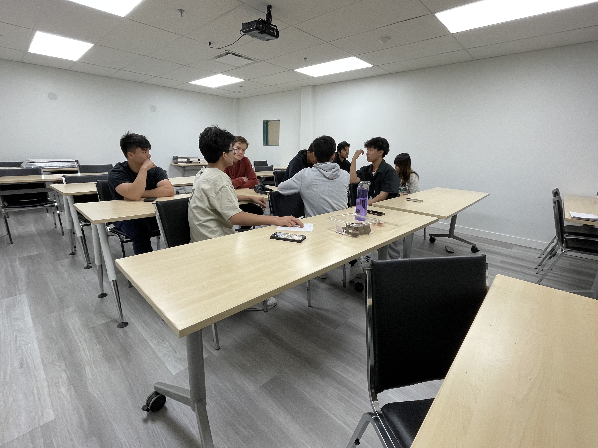
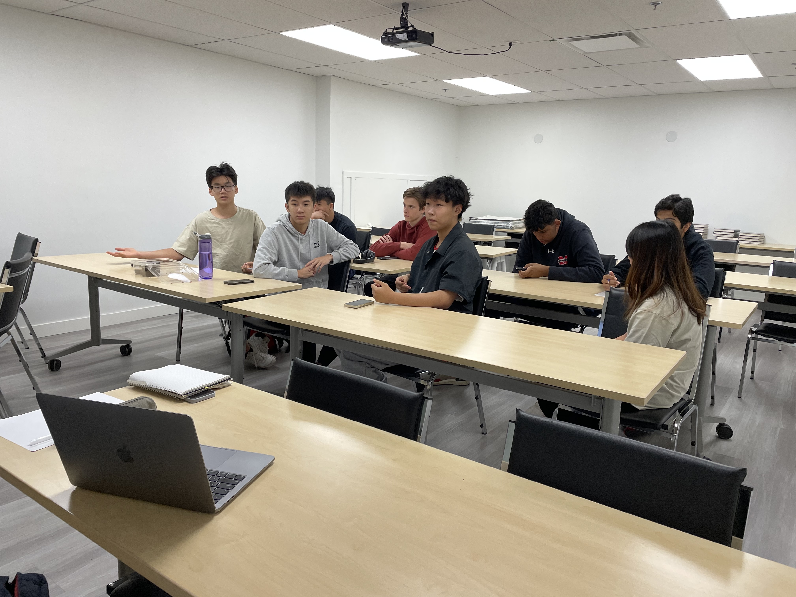
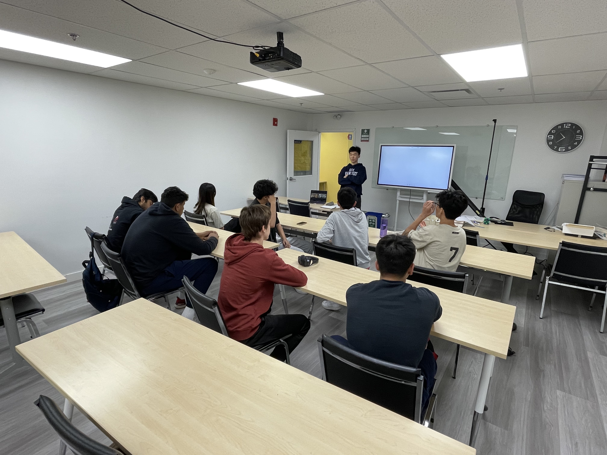
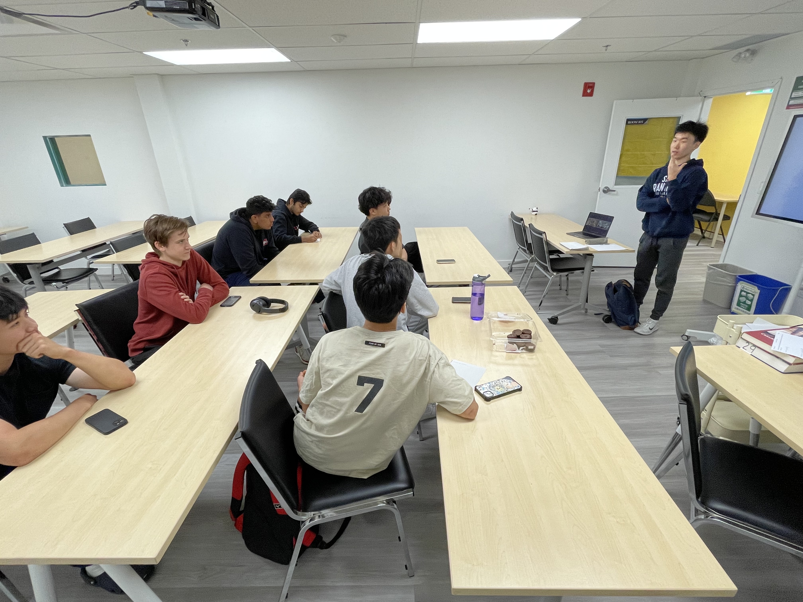
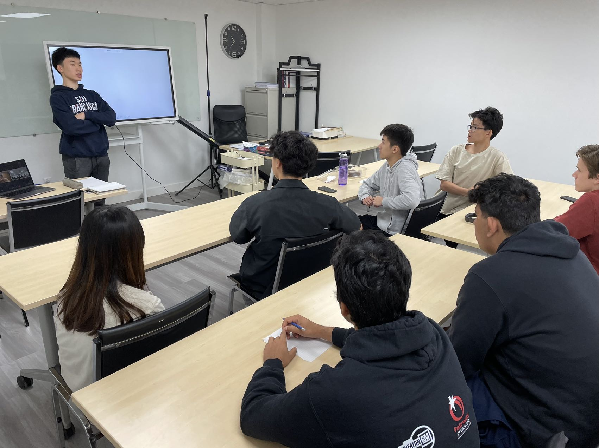
I recently had the opportunity to conduct a climate talk at a local school, and it was an incredibly rewarding experience. During the session, I engaged with a group of young, enthusiastic students, sharing insights about climate change and its impacts. We delved into the importance of sustainable living and how each individual can make a difference. The talk was interactive, inviting students to ask questions and contribute their perspectives, which turned into a vibrant discussion. Witnessing the students' curiosity and eagerness to learn about environmental issues was truly inspiring. It reinforced my belief in the power of education to foster a generation committed to building a sustainable future.
- Richard Wang, Co-Founder
Brazilian Politician Interview
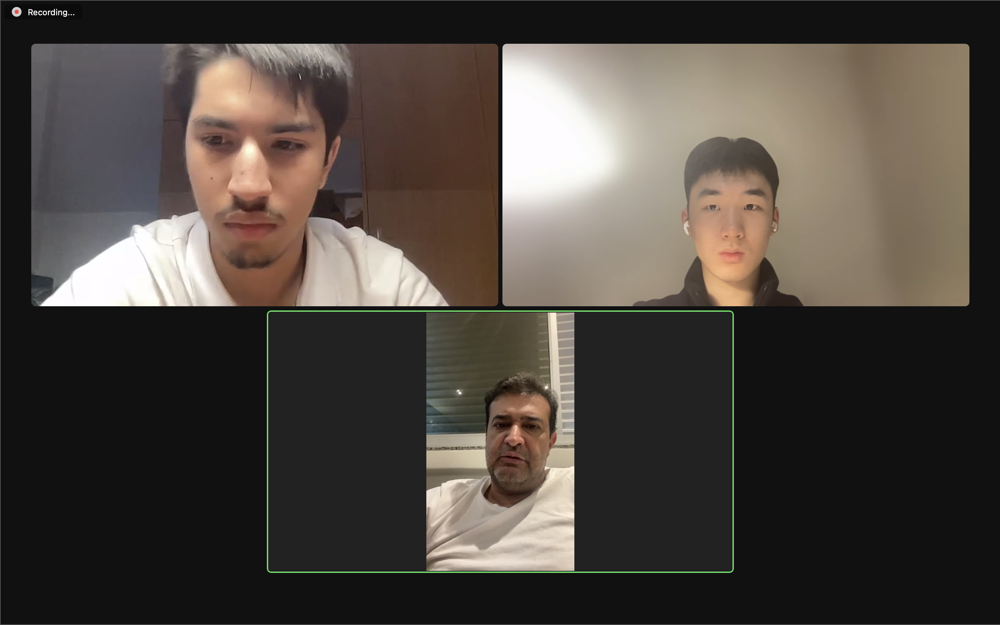
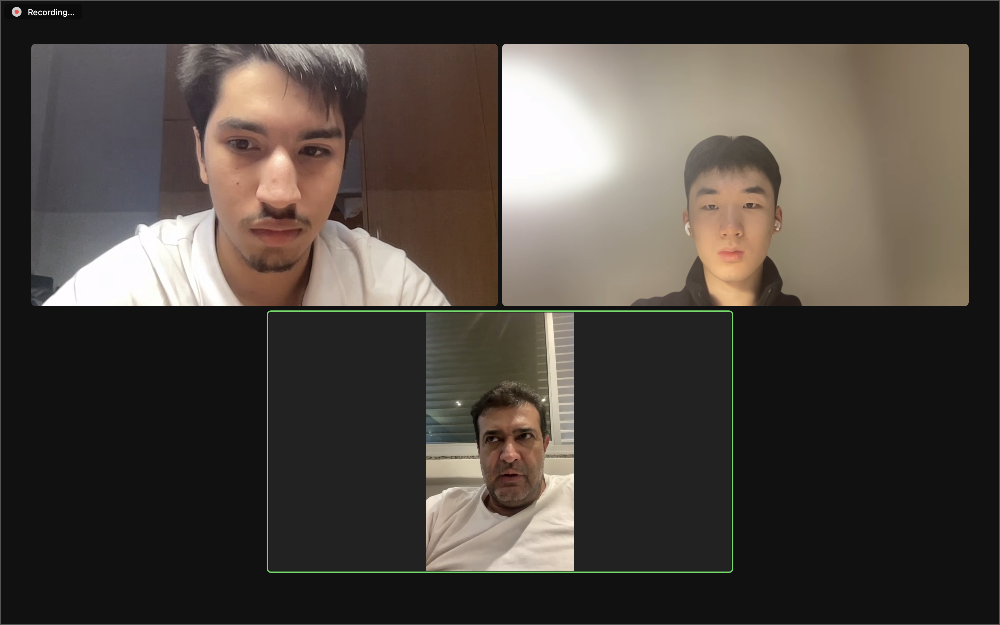
In your perspective, what is being done to protect natural areas and promote biodiversity?
- Brazil is a huge country in terms on macroeconomics and landforms
- It has established more strict land rules and biodiversity production
- Their Savannah is also noteworthy
- As his curriculum Eduardo is in the executive council for the Green Party, Secretary of the Environment for Brazil, now works as a consultant Agricultural Society
In what ways could we propose to the federal government an initiative to promote environmental education on schools to conscientize future generations about the value of volunteer work on the school curriculum?
- This already is being implemented in some schools, it it not still being done in a complete depth. A lot of subjects touch this area briefly, but there is no proper " sustainability education".
- There is already education towards the limitations of waste. However, it is hard to limit waste of natural resources due to the abundant feeling that resources such as water will never end in Brazil.
Has the government implemented plans to incentive companies to adopt more responsible practices regarding the environment? How could states deal with companies who do not comply to ESG criteria?
- Recently, a project of law was approved in the congress regarding the carbon credit laws.
- The greatest actor in attaining a sustainable society is the government. Carbon credits are a great step towards attaining a sustainable society given that they remunerate preservation financially.
- For this reason, the individual must educate itself and elect responsible politicians whom will fight for the encoding, monitoring, enforcing, and interpreting of the law.
- Brazil, within the " de jure" sphere has made multiple advances, but there must be a greater effort towards the " de facto" part.
As the former leader of the Green Party, what policies set you apart from other political parties like the Liberal Party and Workers’ Party? Can you highlight some key environmental policies or initiatives that you championed during your time as the Green party leader?
- The green party follows an environmental agenda, it does not lean towards the right or the left.
- We are a party that moves forward instead of left and right
- The main difference is the environmental agenda, pollution protection, forestry protection, water policies, basic sanitation, biome protection. The green party agenda is solely based in the environment
- The agenda is different than the European agenda or the American one, since we consider the global, national, local, and individual spheres of analysis
- The agenda focuses more towards urban than rural green agenda which is initially seem as contradictory
- The agricultor already has a basic idea of how to preserve his land since he depends on this for his living, while in the urban areas there is a lack of information.
What advice do you have for individuals and organizations looking to make a positive impact on the environment? Basically, what steps do you believe are crucial, from not just the government but the general population, for ensuring a greener and more sustainable future for the country?
- The first step is to trespass the barrier from the education in theory to our Brazilian culture in practice. It is not a matter of knowing that the trash belongs in a trash can, but to actually do it
- The key towards this move is sustainable energy, local policies are already being directed towards subsidies towards solar panels, hydroelectrics, etc..
- We are balancing and incentivizing an equilibrium between technology and the environment in order to use science to maximize agricultural outputs and minimize waste.
How optimistic are you about the future of environmental conservation and sustainability in Brazil and other countries that play a vital role in the fight against climate change
- The climate change issue is mostly related to the emission of greenhouse gases due to state's choices of energy sources.
- We should seek clean energy sources as our primary step, not every country has the same continental proportions as Brazil and free access to spots which are ideal for solar and hydroelectric energy development
- China for example, has been criticized globally due to its use of coal. However, it is a leading force towards the development of clean energy sources. It is easy for European countries to claim they are not polluting since they are already developed.
- Ultimately, we must understand and truly embrace the preservation mindset, which will only happen when necessity is imminent.
LCOY 2024
At the Local Conference of Youth Canada 2024 (LCOY), we had the honor of presenting a comprehensive budget of $2.4 trillion, designed to support the COP28 declaration on a global climate framework. This budget proposal will be formally submitted to COP29, aligning with critical themes of the global climate dialogue. The framework centers on advancing the energy transition, bolstering adaptation and resilience strategies, addressing the stark realities of loss and damage, enhancing natural capital, promoting sustainable agriculture, and ensuring a just transition for all communities.
During our presentation, we emphasized the urgent need for a rapid energy transition, prioritizing renewable technologies to meet global climate targets. In discussing adaptation and resilience, we highlighted the importance of empowering vulnerable communities to cope with climate impacts through sustainable infrastructure investments. The segment on loss and damage acknowledged the harsh consequences faced by those disproportionately affected by climate change, while the sections on natural capital and sustainable agriculture illustrated how harnessing the power of ecosystems can create long-term environmental and economic benefits.
Forestry Solutions and Insights from COP29 with Chunyu Pan
The Climate Society interviewed Chunyu Pan, a PhD candidate in Forest Resources Management at the University of British Columbia (UBC), whose research delves into the global carbon market, with a focus on forestry and bamboo carbon offset projects and their impact on addressing climate change. In November 2024, Chunyu attended the 29th United Nations Climate Change Conference of the Parties (COP29) in Baku, Azerbaijan, as part of UBC's delegation. Alongside Dr. Guangyu Wang, he hosted a side event titled "Advancing the Quality and Integrity of Forestry Climate NbS: Challenges, Innovations, and Strategies," which focused on enhancing forest-based nature-based solutions as essential tools for tackling global climate change. During our interview, Chunyu shared his perspectives on the outcomes of COP29, highlighting its global implications, particularly for developing nations, and the critical responsibilities of developed countries in addressing climate challenges. He also discussed innovative strategies for scaling and financing robust forest-based nature-based solutions to ensure equitable and effective climate action worldwide.
Insights from COP29: Professor Guangyu Wang
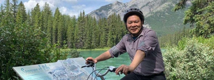
In the wake of COP29, held in Baku, Azerbaijan, The Climate Society had the privilege of speaking with Professor Guangyu Wang, a distinguished researcher from UBC’s Faculty of Forestry who attended COP29. With a career dedicated to sustainable forest management, integrated watershed management, and climate change adaptation, Dr. Wang offers unique insights into how the conference's resolutions could shape the future of global forestry practices.
1. How do you plan to share and apply the insights you gained from COP29 here at UBC or in your broader work
Thank you so much for having me, Steven!
Regarding your question…at UBC, I intend to integrate the insights from COP29 into my teaching, research, and community engagement. For instance, I will incorporate the latest developments on climate change mitigation and forest conservation strategies into my class (FRST 439 International Forestry), ensuring students are equipped with up-to-date knowledge. Additionally, I will organize workshops and seminars to disseminate these insights among researchers, policymakers, and industry professionals. These sessions will foster dialogue and collaboration, bridging the gap between global resolutions and local actions. In my broader work, I aim to use these insights to guide initiatives such as enhancing sustainable forest management practices and developing standards for forest therapy that align with the latest global frameworks.
2. Looking ahead, what are the main challenges for implementing COP29’s resolutions, and what would you advise policymakers to prioritize before COP30?
The main challenges for implementing COP29’s resolutions include securing sufficient funding for climate and conservation initiatives, fostering international cooperation amidst differing national priorities, and ensuring that policies are actionable and inclusive. Additionally, bridging the gap between policy and practice remains a critical hurdle, particularly in developing countries where resources may be limited.
To address these challenges, I would advise policymakers to prioritize:
Mobilizing climate finance: Focus on innovative mechanisms to ensure adequate funding reaches frontline communities and conservation projects.
Enhancing accountability: Develop robust monitoring frameworks to track progress toward commitments made at COP29.
Promoting equity and inclusion: Ensure that resolutions consider the voices of Indigenous communities, smallholder farmers, and vulnerable populations.
Strengthening science-policy integration: Utilize cutting-edge research and technology to inform policy development and implementation.
By focusing on these priorities, policymakers can build momentum toward COP30 and beyond.
3. How do you see the COP29 outcomes influencing global forest management strategies, particularly in the Asia-Pacific region?
The outcomes of COP29 are likely to play a transformative role in shaping global forest management strategies, particularly in the Asia-Pacific region. With its rich biodiversity and extensive forest coverage, the region has a critical role in global climate change mitigation. Key COP29 resolutions, such as commitments to reduce deforestation and enhance carbon markets, will incentivize sustainable practices and encourage investments in reforestation and forest restoration projects.
Additionally, the Asia-Pacific region is uniquely positioned to benefit from initiatives promoting nature-based solutions, as they align with traditional land management practices and cultural values. COP29’s emphasis on leveraging technology and data to monitor forest health can also aid countries in the region to improve management and combat illegal logging and deforestation.
Moving forward, the success of these strategies will depend on regional collaboration, particularly through organizations like ASEAN, and the ability to attract private sector investment in sustainable forestry. The Asia-Pacific’s leadership in adopting these strategies could serve as a global model for balancing ecological preservation and economic development.
 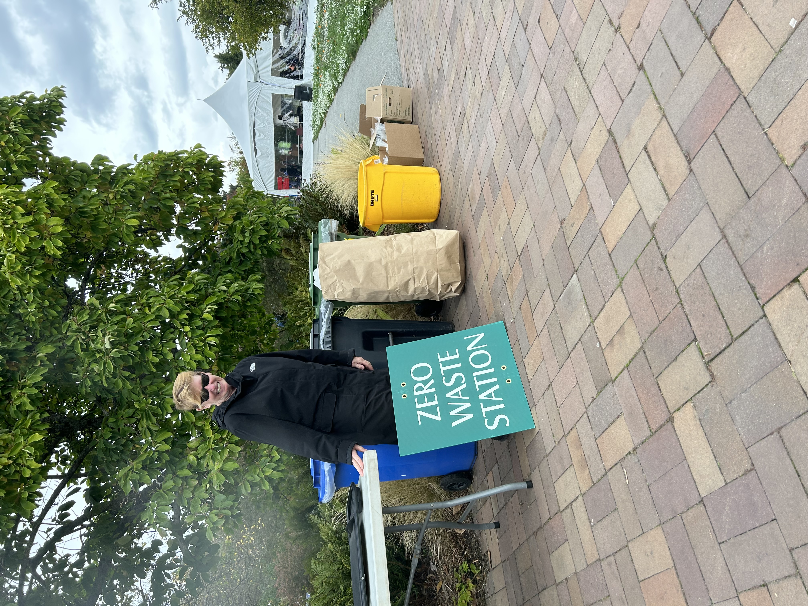
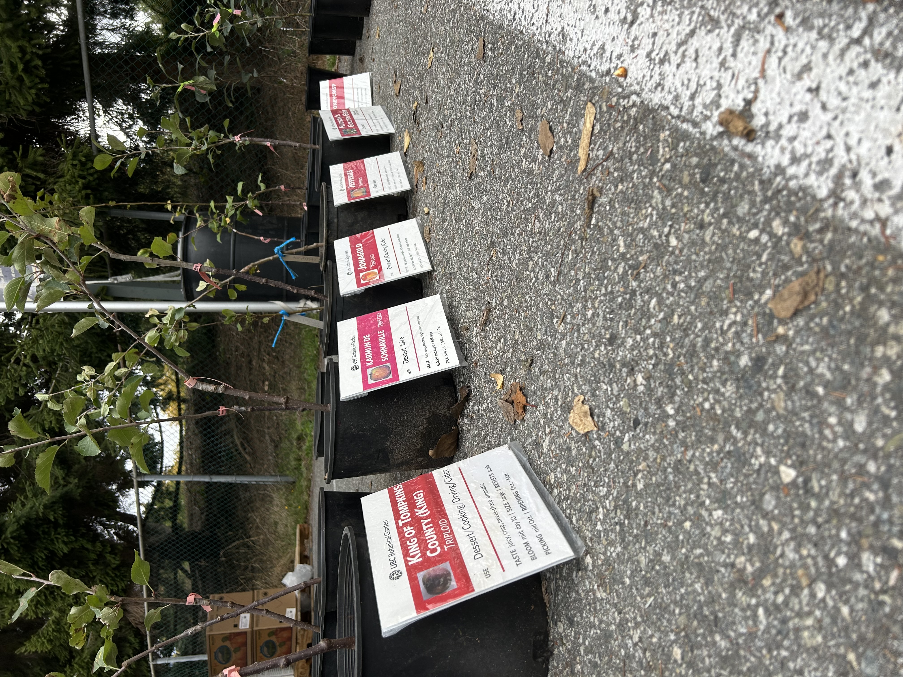
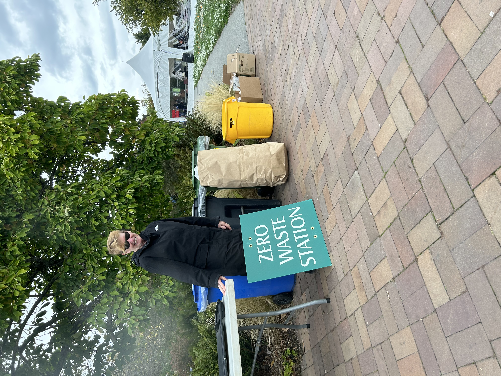
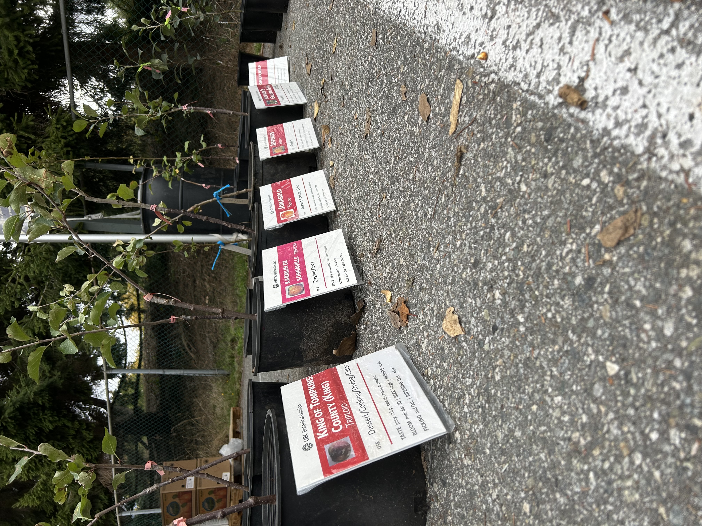